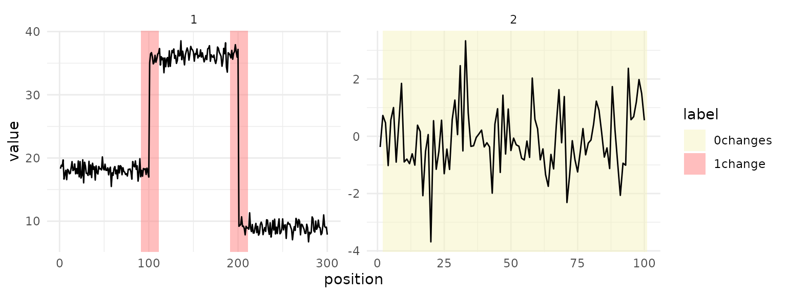
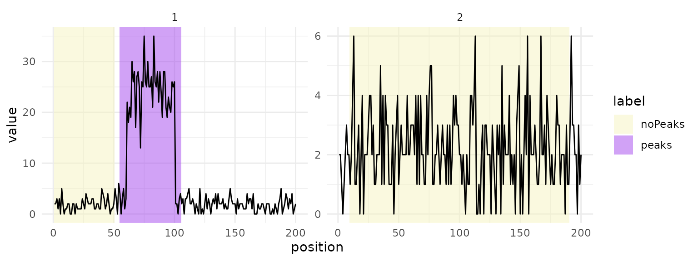

Tasks and labels
tasks.RmdThis chapter builds a TaskCpt, lists the labels it
accepts and sets out the coordinates of a labelled region. A task holds
the sequences and their labels, and learners, measures and plots all
read from it.
Building a task
A task has one row per sequence. The data needs two list columns: one
holds the signal as a numeric vector, the other a
data.table(start, end, label) of labelled regions.
Sequences can differ in length and in their number of labels.
set.seed(36)
cpt_data = data.table(
signal = list(c(rnorm(100, 18), rnorm(100, 36), rnorm(100, 9)), rnorm(100, 0)),
label = list(
data.table(start = c(90, 190), end = c(110, 210), label = "1change"),
data.table(start = 1, end = 100, label = "0changes")
)
)TaskCpt$new() takes the name of the label column as
target and the name of the signal column as
sequence. label_type sets the label
vocabulary.
task = TaskCpt$new(
id = "toy", backend = cpt_data,
target = "label", sequence = "signal", label_type = "changepoint"
)
task
#>
#> ── <TaskCpt> (2x1) ─────────────────────────────────────────────────────────────
#> • Target: label
#> • Properties: -
task$label_type
#> [1] "changepoint"$truth() returns the labelled regions, one table per
sequence.
task$truth()
#> [[1]]
#> start end label
#> <num> <num> <char>
#> 1: 90 110 1change
#> 2: 190 210 1change
#>
#> [[2]]
#> start end label
#> <num> <num> <char>
#> 1: 1 100 0changesThe signal column has the role sequence, so it is not a
feature. Learners compute their own features from it.
task$col_roles$sequence
#> [1] "signal"Changepoint labels
With label_type = "changepoint", a label gives the
number of changes a region may contain. The names come from
penaltyLearning::change.labels, which also accepts
synonyms.
| Label | Synonyms | Changes in the region |
|---|---|---|
0changes |
normal, 0breakpoints
|
none |
1change |
1breakpoint |
exactly one |
>0changes |
breakpoint, >0breakpoints
|
at least one |
A segmentation with more changes in a region than its label allows has a false positive there. One with fewer changes than the label needs has a false negative.
Peak labels
With label_type = "peak", the signal is a sequence of
non-negative integer counts, and the labels come from the PeakError
package.
| Label | Meaning |
|---|---|
noPeaks |
no peak overlaps the region |
peaks |
at least one peak overlaps the region |
peakStart |
exactly one peak starts in the region |
peakEnd |
exactly one peak ends in the region |
The first sequence below has a burst of counts at positions 61 to
100, inside a peaks region.
set.seed(36)
peak_data = data.table(
counts = list(c(rpois(60, 2), rpois(40, 25), rpois(100, 2)), rpois(200, 2)),
label = list(
data.table(start = c(1, 55), end = c(50, 105), label = c("noPeaks", "peaks")),
data.table(start = 10, end = 190, label = "noPeaks")
)
)
peak_task = TaskCpt$new(
id = "toy_peak", backend = peak_data,
target = "label", sequence = "counts", label_type = "peak"
)
peak_task
#>
#> ── <TaskCpt> (2x1) ─────────────────────────────────────────────────────────────
#> • Target: label
#> • Properties: -Coordinates
Positions are 1-based indices into the signal. The two label types
read start and end differently, because a
change sits between two points and a peak covers points.
A change at X lies between positions X and
X + 1. A changepoint region is open on the left and closed
on the right, (start, end], so it holds the changes with
start < X <= end. The region from 90 to 110 holds the
changes at 91 to 110. A region from start = 0 to
end = n covers every change a sequence of n
points can have. A region that starts at 1, as in the toy above, leaves
out a change between the first two points.
A peak region covers positions start to
end, both included. A predicted peak counts for
noPeaks and peaks when it overlaps those
positions, and for peakStart and peakEnd when
its first or last position falls inside them.
autoplot() shades each region so that a predicted mark
lies inside the shading exactly when the measures count it inside the
region. Changes are drawn halfway between two positions.
autoplot(task)
The peak task uses the colours of the PeakError labels.
autoplot(peak_task)
Each sequence gets its own panel. To plot part of a large task,
filter a copy first, for example
task$clone()$filter(1:4).